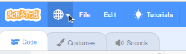
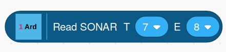
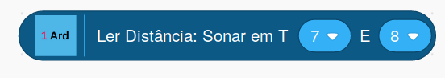

Block Text And Alert Translations
When you select a language by clicking on the globe icon in the Scratch editor, if a translation is available for the selected language, the OneGPIO Scratch block text appears in that language.

If translation for your selected language is not available, then the text will be in English
If your language is not currently supported and you wish to provide a translation, I encourage you to do so. Not only will you be listed as a contributor, but others who are speakers of your language will thank you as well.
Providing A Translation
To provide a translation for the Arduino, ESP-8266, and Raspberry Pi extensions, you simply update the translate.txt file. For the Picoboard, you update the picoboard.txt file. And for the CircuitPlayground Express, you update the playground_express.txt file. You then either generate a GitHub pull request, or if you are unfamiliar with Git and pull requests, submit it as an issue to https://github.com/MrYsLab/s3onegpio/issues. If you submit the translation as an issue, please call the issue:
Translation For LANGUAGE BEING ADDED,
where LANGUAGE BEING ADDED is the name of your language.
I will then incorporate your translation into the source code and update the Scratch 3 Editor to contain your translation.
Translations.txt, Picoboard.txt, And Playground_Express.txt
The translations.txt, picoboard.txt, and playground_express.txt files contain the text for all of the blocks and alerts for the OneGPIO extensions.
Let's look at the Sonar block to understand what needs to be added to the translations.txt file.
Here we see the English and Brazilian Portuguese blocks for the Sonar block.


Here is the language specification for the block in translation.txt.
const FormSonarRead = {
'pt-br': 'Ler Distância: Sonar em T[TRIGGER_PIN] E[ECHO_PIN]',
'pt': 'Ler Distância: Sonar em T[TRIGGER_PIN] E[ECHO_PIN]',
'en': 'Read SONAR T [TRIGGER_PIN] E [ECHO_PIN]'
};
Each language has its own line in the list of translations, and each line begins with the language's identifier. In this case, pt-br for Brazilian Portuguese, pt for Portuguese, and en for English.
Any text between square brackets is a place holder for a parameter field in the block. Do not translate the text within the square brackets, and please use them as is, no matter the alphabet being used. All other text should be translated.
You are free to use as many words as you need. The parameters (text in square brackets) may be placed anywhere within the translation that makes sense for your language.
Alert Translation
Alerts do not contain any parameters.
The alert for the ESP-8266 is formatted a little differently.
// ESP-8266 Alert
const FormAlrt = {
'pt-br': {
title: "Atenção",
text: "Informe o endereço IP da placa ESP-8266 no bloco apropriado",
icon: "info",
},
'pt': {
title: "Atenção",
text: "Informe o endereço IP da placa ESP-8266 no bloco apropriado",
icon: "info",
},
'en': {
title: "Reminder",
text: "Enter the IP Address of the ESP-8266 Into The IP Address Block",
icon: "info",
}
};
For this translation, translate the text in the "title" and "text" fields, but do not translate the "icon" field. Please retain the words title, text, and icon in English.
If you have any questions, please feel free to email me at: MisterYsLab@gmail.com
Copyright (C) 2019-2020 Alan Yorinks All Rights Reserved